S
t
r
e
f
a
P
i
e
s
z
a
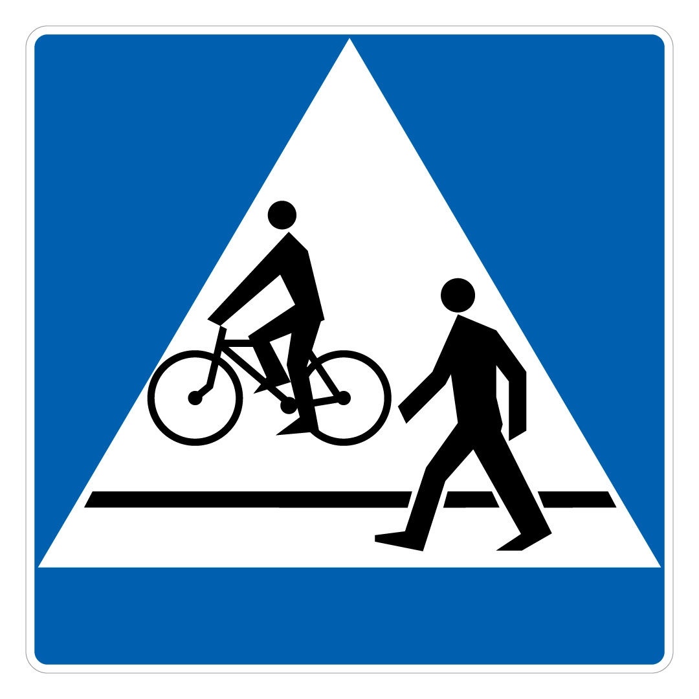
Na czym polega ustąpienie pierwszeństwa?
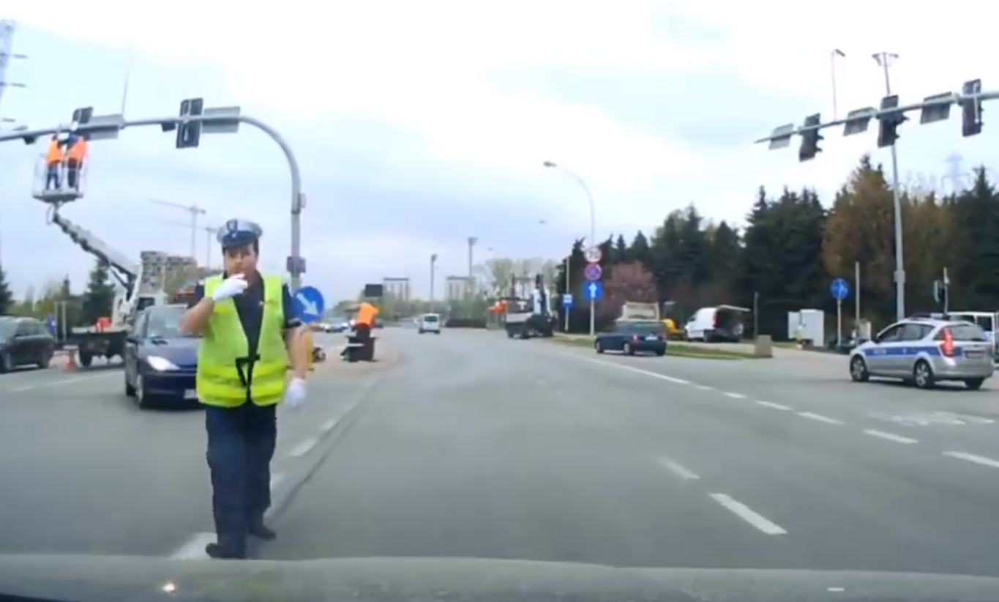
Czy zawsze należy wykonać polecenia policji?
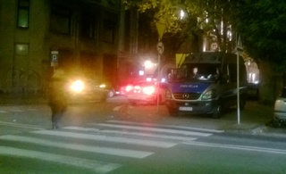
(Nie)bezpieczni seniorzy
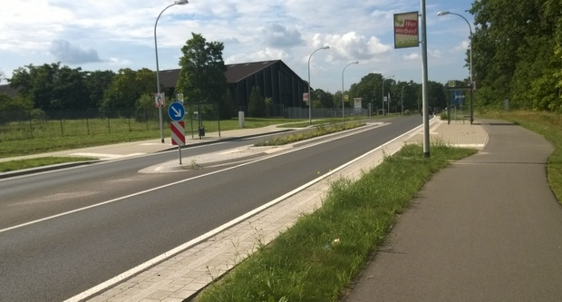
Wizja zero w praktyce, czyli jak powinien wyglądać bezpieczny przystanek
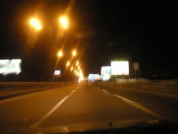
O pijanych kierowcach z zupełnie innej beczki. Jeszcze raz.
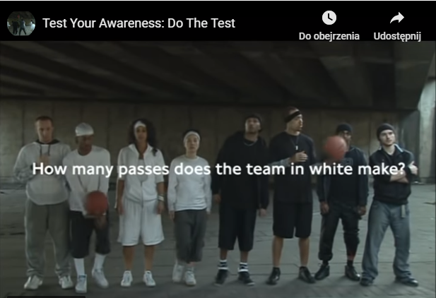
Uwaga! Nowe zadanie!
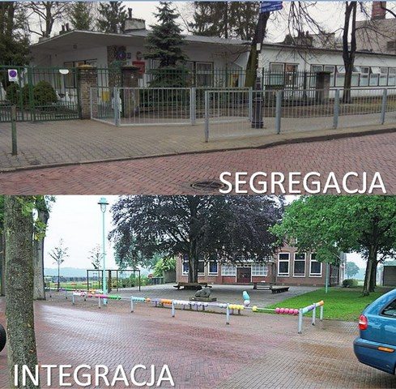
Segregacja czy integracja?
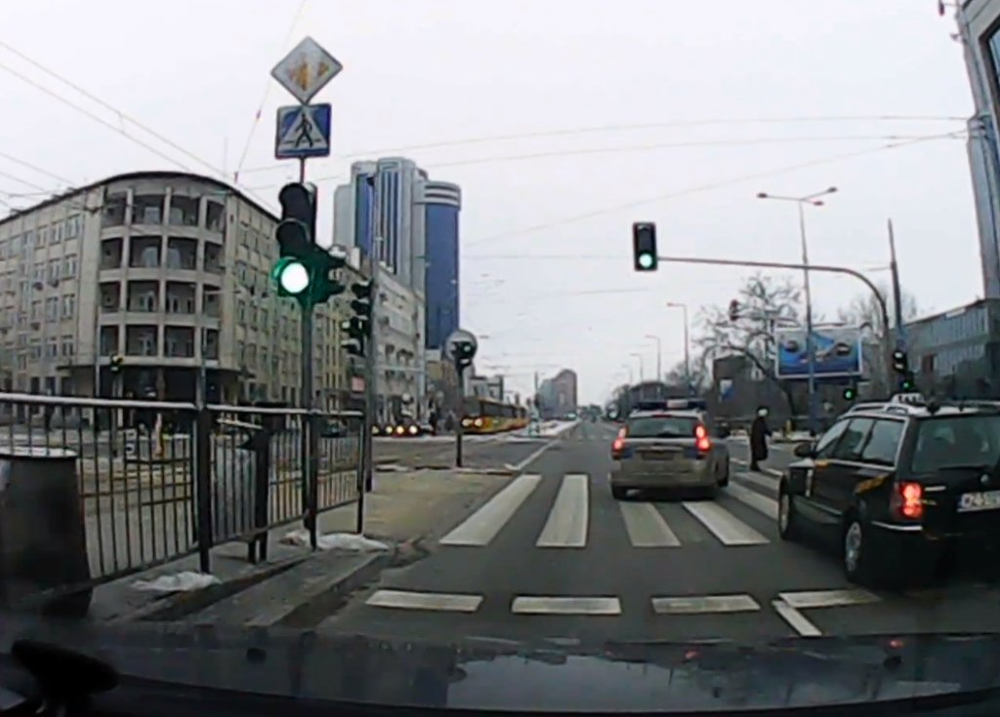
Kto ochroni pieszych przed policją?
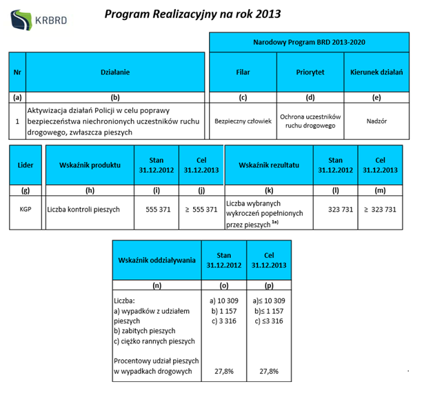
Już my was ochronimy
Opinia dotycząca projektu zmian w PoRD
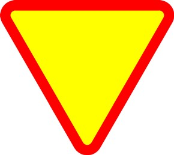
Poruszam się w mieście - po ludzku. Apel do gazety
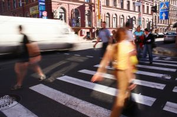
Prawdziwe pierwszeństwo dla pieszych. Nareszcie!
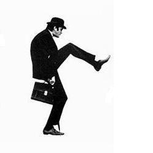
Jak stoję, to chcę iść, jak idę, to mam stać. Logika dla pieszych w polskim prawie.
Bo zielone było za krótkie
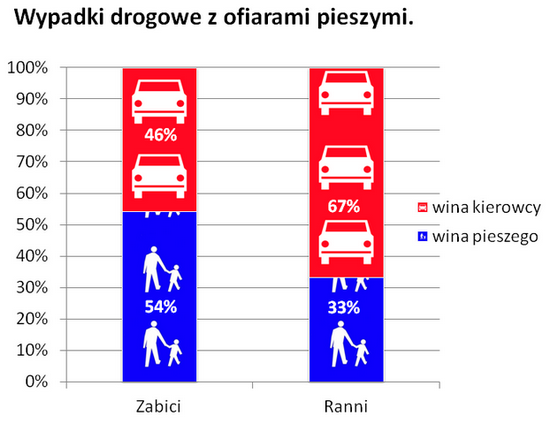
Winić ofiarę?
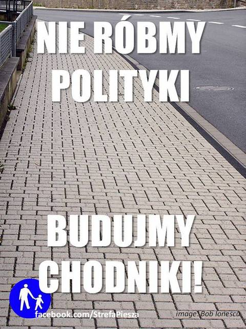
Nie róbmy polityki, budujmy chodniki!
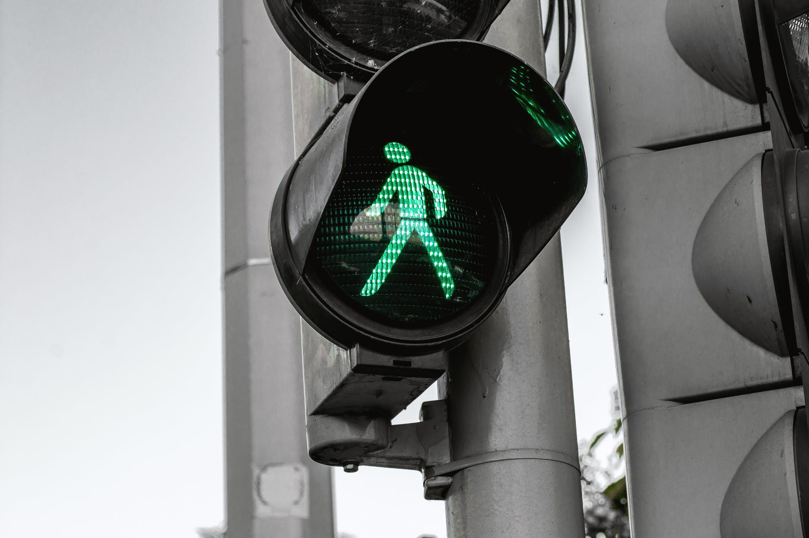
Zielone? Jakie zielone! Bezpieczeństwo pieszych po polsku
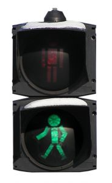
Gdy pieszy chce przejść przez jezdnię...
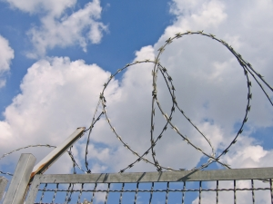
Efekty uboczne grodzenia osiedli
Komunikat kampanii Weekend bez Ofiar
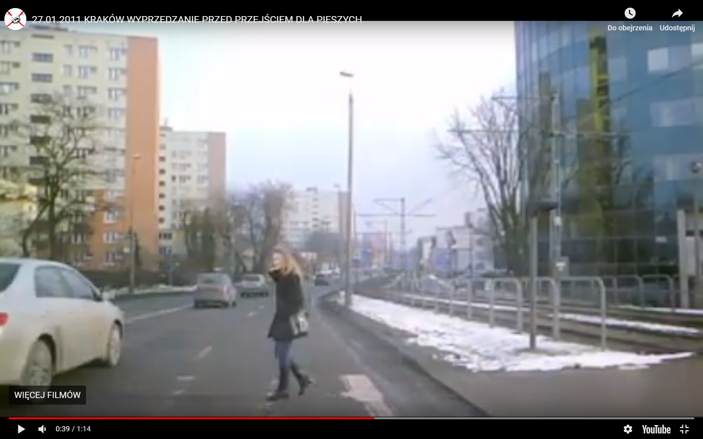
Dyskryminacja pieszych w Polsce
Zapomniana inicjatywa Zarządu Dróg Miejskich
Niewidoczni - stara kampania, nowe pytania.
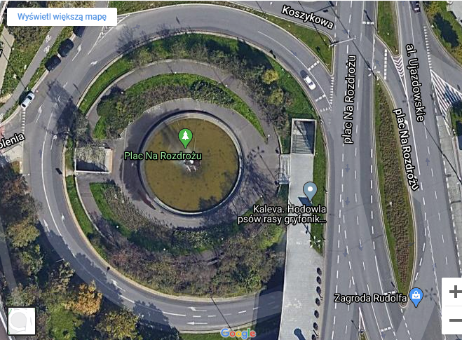
Wyspa na Rozdrożu lądowiskiem dla UFO